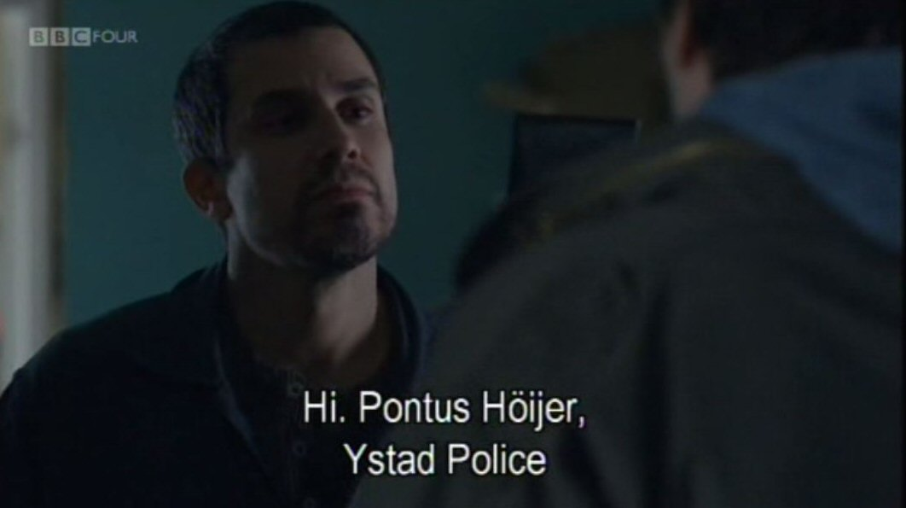

Saturday, October the 27th, 2012
back to: title, date or indexes
Meanwhile, in Wallander, mysteries abound. There has been absolutely no sign of Bonken for several episodes, and his sidekick Pontus Asp is going about the place pretending to be Pontus Höijer. What can it all mean?
